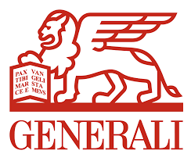
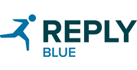

Ciao! Sono Marco
Sono un ingegnere informatico e lavoro nel gruppo Digital Transformation di Generali Italia S.p.a con lo scopo di innovare, dall'interno, i processi tecnologici aziendali.
Sono nato a Messina ma ho lasciato (sigh!) la Sicilia nel 2015 per proseguire la mia carriera universitaria in Piemonte dove, nell'Aprile 2018, ho conseguito la laurea magistrale in Computer Engineering al Politecnico di Torino.
Appena posso però preparo lo zaino e con una nuova Lonely Planet sono pronto a prendere un aereo verso la prossima destinazione.

DevOps & Sw Engineer
Giugno 2020 - Oggi
Come membro della Digital Factory di Generali attualmente mi occupo della costruzione della nuova architettura a microservizi su cui si baserà l'intera suite di applicativi del gruppo e, contestualmente, del loro sviluppo.
Big Data & Sw Engineer
Settembre 2018 - Giugno 2020
Durante la prima parte della mia permanenza in Data ho seguito in prima persona un ambizioso progetto presso un cliente che si proponeva di conseguire il risparmio di MIPS sull'inquiry dei dati dei propri clienti mediante la loro replica su un DB dipartimentale. Dal 2020 ho seguito diverse attività quali la migrazione da sistemi DB Legacy al Datalake Hadoop in Eutelsat e la realizzazione del portale telematico di assistenza di un cliente in ambito automotive. Le tecnologie coinvolte in queste progettualità spaziano da NiFi ad Hive, Kafka, Storm e Databricks. Java e Python i linguaggi utilizzati.

Software Engineer
Gennaio 2018 - Settembre 2018
Developer della Factory del motore di ricerca semantico di un cliente in ambito assicurativo. Ho continuato a lavorare sulle tecnologie su cui si e' basato il mio lavoro di tesi oltre ad esplorare quelle per la realizzazione di Virtual Assistant e Chatbot con prodotti come Node-Red e IBM Watson Assistant.
Internship Student
Maggio 2017 - Dicembre 2017
Durante l'esperienza nel team Cognitive si è svolto il mio lavoro di tesi incentrato sulla realizzazione di un motore di ricerca in ambito assicurativo con conoscenza del dominio e in grado di rispondere a query in linguaggio naturale.
Ho anche avuto modo di assistere e seguire in prima persona la realizzazione di alcuni progetti e di interagire con diversi prodotti della piattaforma di IBM Watson; in particolare ho acquisito esperienza con Watson Explorer Engine,Watson Content Analytics e Content Analytics Studio. Grazie a questa esperienza ho potuto consolidare le mie competenze in problem solving e di teamwork.
Formazione
Politecnico di Torino
Laurea Magistrale in Ingegneria Informatica
104/110
Università di Messina
Laurea in Ingegneria Informatica e Telecomunicazioni